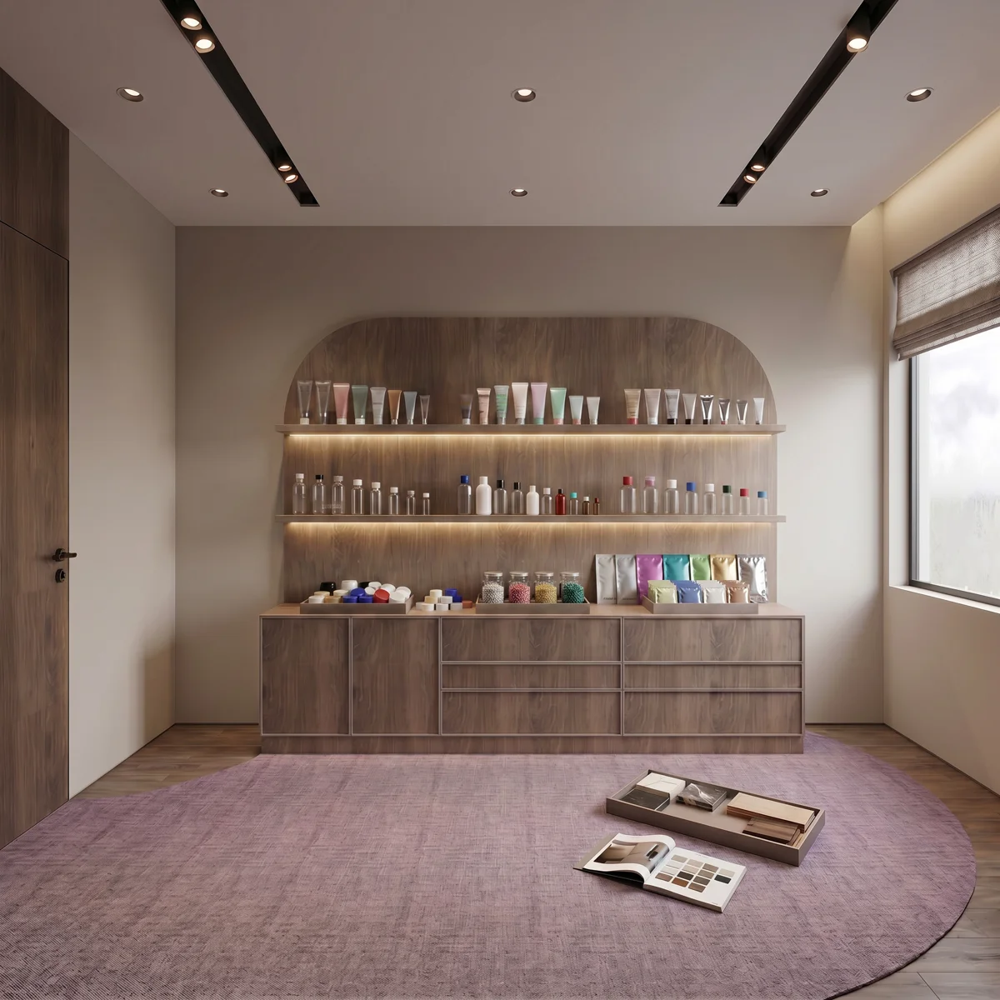
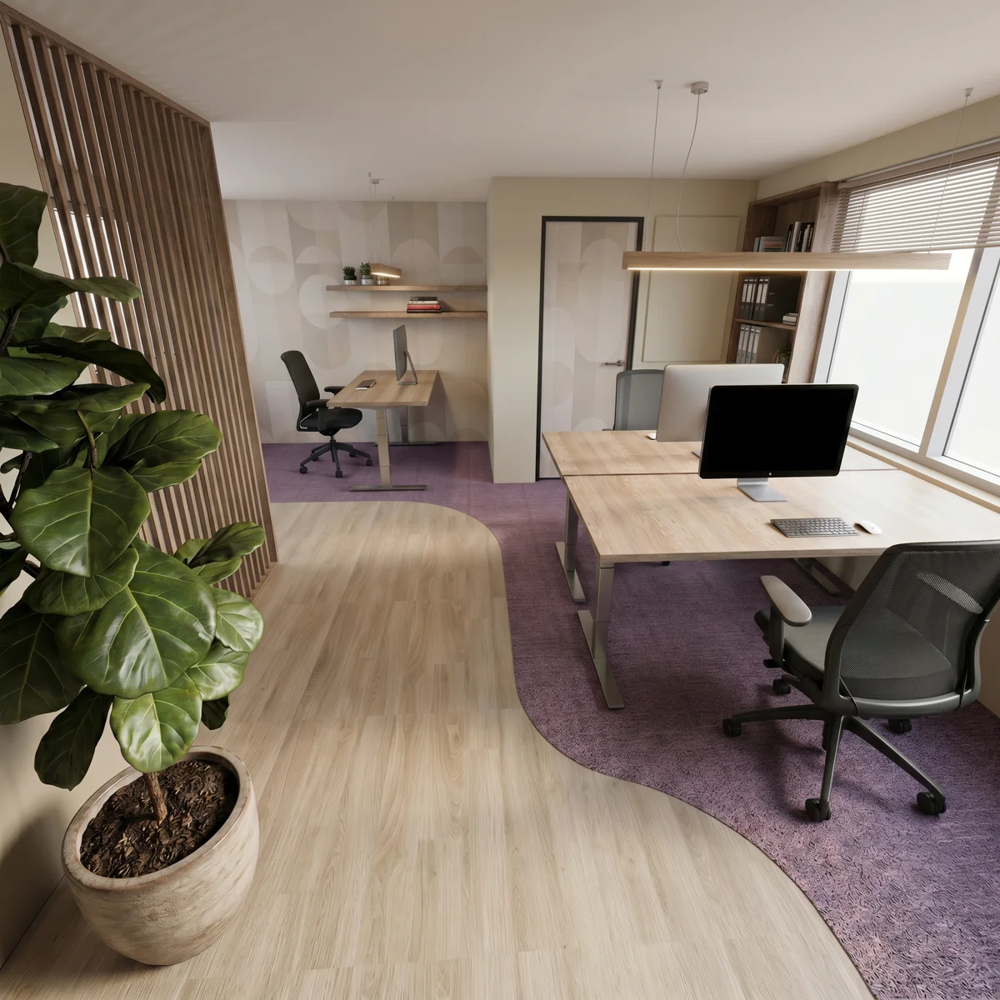
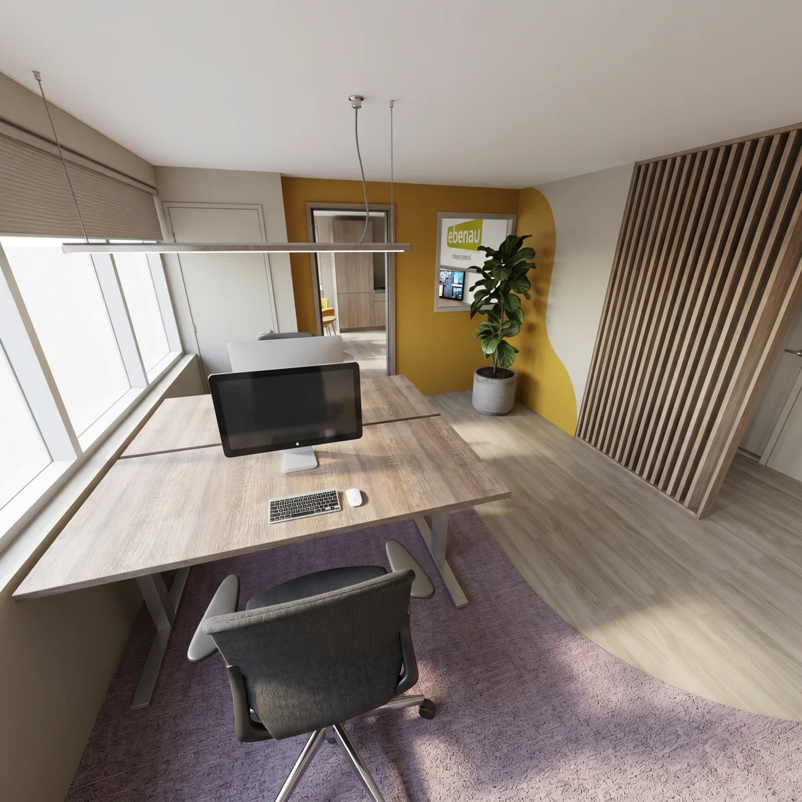
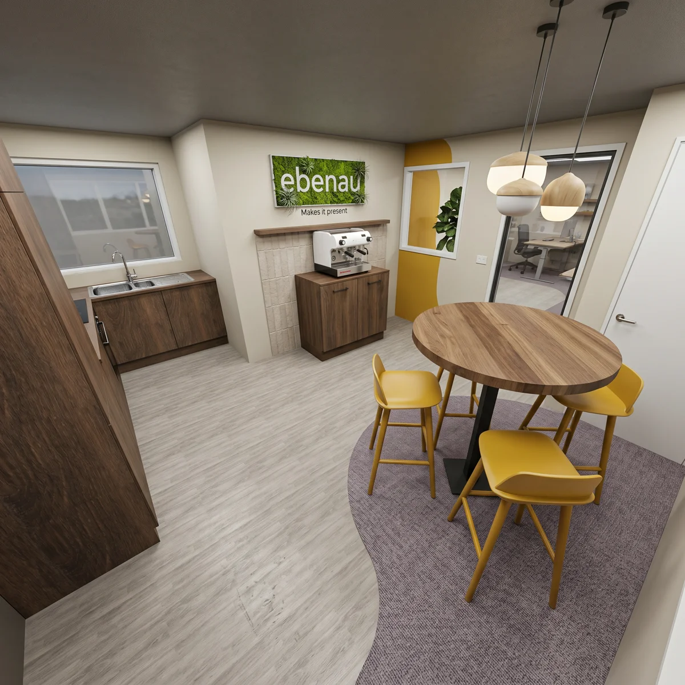
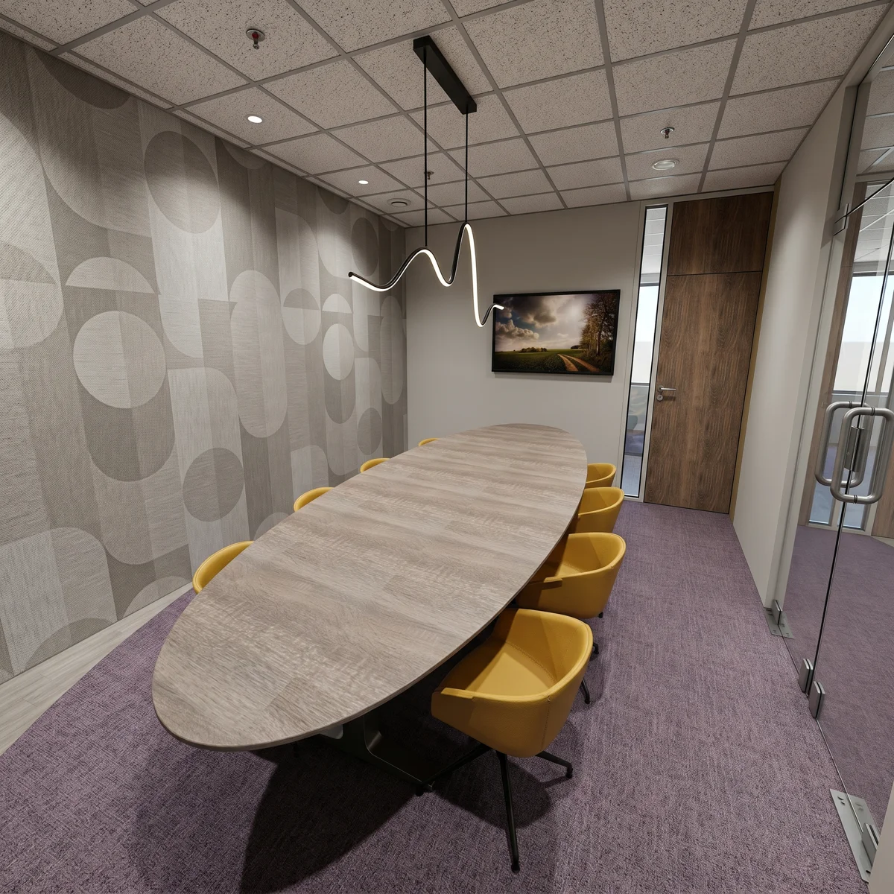
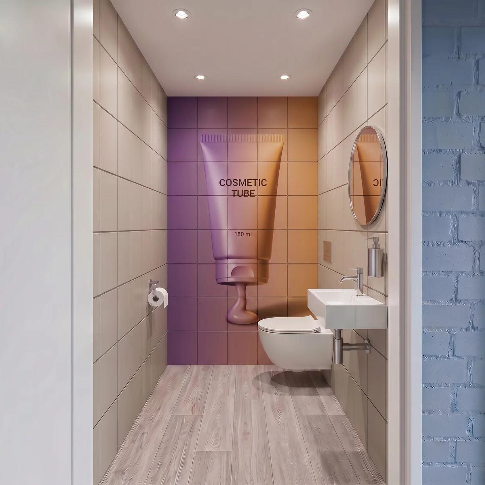

Welkom heten
Jacobs Verzekerd
Ons kantoor past niet meer bij ons merk.
Bekijk project →Nieuw beginnen
Ontwerpvisualisaties van Ebenau BV.

Klik op een visualisatie om alle 6 beelden te bekijken.
De opgave
Het team van Ebenau had meer ruimte nodig. Het nieuwe pand bood de kans om het kantoor vanaf het begin goed neer te zetten, in plaats van een bestaande inrichting mee te verhuizen en achteraf aan te passen.
De vraag was een kantoor dat als één geheel klopt: met ruimte om geconcentreerd te werken, om klanten te ontvangen en om het product te laten zien. En met een indeling die ook werkt als het team verder groeit.
De aanpak
Voordat de aannemer begon, heb ik één ontwerp gemaakt voor het hele pand: indeling, materialen, kleuren, verlichting en looproutes. Met visualisaties werd elke ruimte vooraf zichtbaar, zodat keuzes konden worden getoetst voordat er iets werd gebouwd of besteld.
Daardoor kon de aannemer direct gericht aan de slag. Wandposities, lichtpunten en vloerovergangen lagen vast, en losse keuzes achteraf bleven uit.

Ontwerpkeuzes
Een showroom als visitekaartje. Een boogvormige notenhouten wandkast met verlichte planken toont het productassortiment: kunststof- en aluminiumtubes en medische verpakkingen, gepresenteerd als een collectie. Lades aan de onderzijde bieden ruimte voor samples, en een rond tapijt geeft de ruimte de sfeer van een ontvangstruimte in plaats van een opslag. Klanten zien hier direct wat Ebenau BV levert.
De vloer als plattegrond. Een lichte houtlookvloer vormt de looproute. Tapijt in een warme mauve tint ligt in vloeiende vormen onder de werkplekken en de lunchtafel. Zo zijn de zones zonder extra wanden herkenbaar, en dempt het tapijt het geluid waar mensen werken en zitten.
Kleur en materiaal
Warme accenten in oker en mauve. Een okergele, organisch gevormde wandvlakschildering, okergele stoelen in de vergaderruimte en de lunchruimte, en mauve in het tapijt. Notenhout verbindt de kleuren en geeft het geheel een warme, rustige basis.

Ontmoeting
Een lunchruimte met karakter. Notenhouten keukenkasten, een koffiebar met een tegelwand en een houten plank, een ronde statafel met okergele krukken en houten hanglampen. Een logo van mos maakt de lunchruimte meteen herkenbaar als Ebenau BV.

Overleg
Een vergaderruimte die verrast. Behang met grafische boogvormen, een ovale tafel, okergele stoelen en een golvende lichtlijn boven de tafel. De ruimte is zakelijk genoeg voor klantgesprekken, maar heeft een eigen gezicht.

Details en werkplekken
Het product tot in de details. Zelfs het toilet vertelt het verhaal: een tegelwand met een grote cosmeticatube in een paars-oranje kleurverloop. Het is een speels detail dat bezoekers onthouden.
Rust aan het bureau. Zit-sta-bureaus aan het raam, houten lamellen als halfopen scheiding en lijnverlichting boven de werkplekken. De kantoren zijn rustig en licht, zonder afgesloten te voelen.

Het resultaat
Showroom, werkplekken, vergaderruimte en lunchruimte zijn vanaf de eerste schets als één geheel ontworpen. Notenhout, oker en mauve verbinden de ruimtes. De showroom geeft het product een herkenbare plek, en de indeling is ontworpen met ruimte voor verdere groei.
Verdieping
Bij een nieuw pand is de verleiding groot om eerst te bouwen en daarna in te richten. Juist dan worden de duurste fouten gemaakt: wanden op de verkeerde plek, lichtpunten die niet passen bij de opstelling van de bureaus, vloeren die nergens op aansluiten. In een ontwerp kost een wijziging een paar uur, na de verbouwing een paar duizend euro. Een integraal ontwerp vooraf geeft de aannemer een duidelijke basis en voorkomt dat het kantoor een optelsom van losse keuzes wordt.
Andere vragen, andere projecten
Welkom heten
Ons kantoor past niet meer bij ons merk.
Bekijk project →
Concentreren
Er is te veel onrust en te weinig concentratie.
Bekijk project →